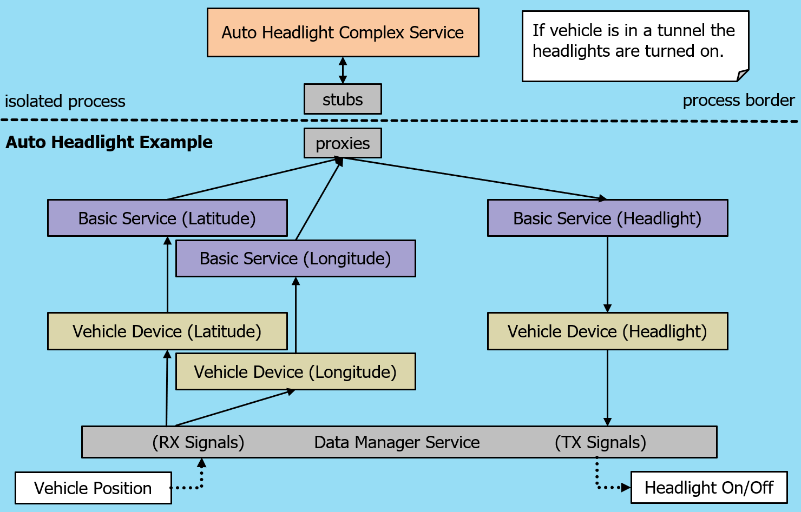

Auto Headlight Example#
Attention
Purpose: Vehicle function demonstration / simulation with open source software OpenXilEnv and Carla
Note
<output-folder>/examples/bin:Sub pages of the auto headlight example
Hint
The function should automatically switch on the light when the vehicle drives into a tunnel:
Two input signals represents the GPS position of the vehicle.
One output signal switches the heeadlight on or off.
The function (complex service) has internally a map containing the position of tunnels so it can switch on automatically the light.
VSS Interfaces#
Note
These following interfaces are not part of the standard but custom interfaces for demonstration purpose.
These values represent the GPS position of the vehicle:
Vehicle.Position.CurrentLatitude VSS signal for current latitude value (GPS-based).
Vehicle.Position.CurrentLongitude VSS signal for current longitude value (GPS-based).
Additionally, one output signal is used for the headlight:
Vehicle.Body.Light.Front.LowBeam VSS signal for front low beam headlight.
These signals should be described in a CSV file. Using the utility tool SDV_VSS_UTIL, an IDL (Interface Description Language) file shall be generated for vehicle devices and basic services.
The utility tool SDV_IDL_COMPILER generates header and source files for the vehicle devices and basic services using their respective IDL files.
These steps are typically automated via commands written in the CMakeLists.txt file, executed during the configuration or build process.
Generated Devices and Services#
The generated vehicle devices and basic services include:
Interfaces for event registration/unregistration These allow updates on the current latitude and longitude of the vehicle via callback functions.
Interfaces for output transmission Used to send values to the vehicle network, typically triggered by higher-level logic. In this example, headlight data is updated using callbacks.
Subscribing to signal updates Subscription to a signal shall take place and which trigger a callback to handle the updated value. Transmission and reception methods may vary.
Unit conversions Vehicle devices may include unit conversions for abstraction. In this example, no conversion is needed as the algorithm uses a compatible unit system.
Generated Vehicle Devices:
Vehicle.Position.CurrentLatitude_Device
Vehicle.Position.CurrentLongitude_Device
Vehicle.Body.Light.Front.LowBeam_Device
Generated Basic Services:
Vehicle.Position.CurrentLatitude_Service
Vehicle.Position.CurrentLongitude_Service
Vehicle.Body.Light.Front.LowBeam_Service
These above mentioned devices are illustrated in the picture below.
Note
Basic Service s include Proxy and Stub components for communication with remote or isolated processes. Vehicle Device s do not include these components, as their interfaces must not be reachable from isolated process.
Complex Service#
The algorithm is implemented in the Auto Headlight Service, a Complex Service.
During initialization, tunnel start and end points are parsed from a TOML file to calculate a bounding box.
The headlight is switched on/off based on the vehicle’s current position (latitude and longitude).
If the position is within the bounding box → headlight is on. If the position is outside → headlight is off.
Service Communication:
Complex services run in a isolated process and access basic services via proxy and stub.
Updates on vehicle position are received through callbacks from basic services.
Headlight status is calculated and written using headlight interfaces, which call the respective basic service and vehicle device interfaces to update the status.